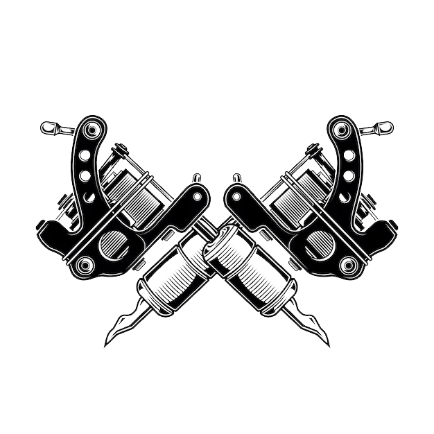

THROUGH
THE  SKIN
THROUGH
THE SKIN
ABOUT
After the pain subsides疼痛過後，
ink is embedded into the skin墨水被植入皮膚，
leaving behind an indelible pattern疼痛过后留下了無法擦除的圖案，
a tattoo takes shape一個文身就這樣成型。
This art, accompanied by pain這份伴隨著疼痛的藝術
has long been seen by many as a symbol of defiance在很多人眼中是“離經叛道”的象徵。
However, in this era但在這個時代，
tattoos are no longer just a meaningless trend or an attempt to look cool.紋身不再是沒有意義的跟風裝酷。
For many tattooed individuals,對很多紋身者來說，
each design is unique每個圖案都獨一無二，
marking an important moment in their lives記錄著屬於自己的重要時刻，
and becoming a permanent companion on their journey.也將一直陪伴自己走下去。
To the older generation在父母那一輩看來，
tattoos are a hallmark of troublemakers紋身是壞孩子的標配，
But to those who bear them,在那些有紋身的人看來，
tattoos are simply memories那只是一段記憶，
—stories etched into the skin.一段故事而已。